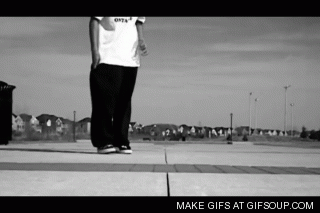
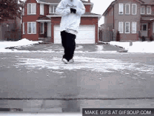

< ul class = " menu " >
< Литий > < HREF = " glavnaja.html " стиль = " слово-интервал : 3 точек ; " мишень = " Окно-1 " > Главная
< ul class = " submenu " >
< Литий > < HREF = " мой history.html " стиль = " слово-интервал : 3 точек ; " мишень = " Окно-1 " > Моя история в танцах
< ul class = " submenu " >
< Литий > < HREF = # > Стили танцев
< ul class = " submenu " >
< Литий > < HREF = " хип-hop.html " стиль = " слово-интервал : 3 ПВ ; " мишень = " Окно-1 " > Хип-Хоп
< Литий > < HREF = " C-wolk.html " стиль = " слово-интервал : 3 точек ; " мишень = " Окно-1 " > Си-волк
< Литий > < HREF = " breyk.html " стиль = " слово-интервал : 3 точек ; " мишень = " Окно-1 " > Брейк
< Литий > < HREF = " house.html " стиль = " слово-интервал : 3 точек ; " мишень = " Окно-1 " > Хаус
< Литий > < HREF = " loking.html " стиль = " слово-интервал : 3 точек ; " мишень = " Окно-1 " > Локинг
< Литий > < HREF = " paping.html " стиль = " слово-интервал : 3 точек ; " мишень = " Окно-1 " > Папинг
< Литий > < HREF = " kramp.html " стиль = " слово-интервал : 3 точек ; " мишень = " Окно-1 " > Крамп
< Литий > < HREF = " predistoria.html " стиль = " слово-интервал : 3 точек ; " мишень = " Окно-1 " > С чего все начиналось
< ul class = " submenu " >
< Литий > < HREF = " video.html " стиль = " слово-интервал : 3 точек ; " мишень = " Окно-1 " > Видео
< ul class = " submenu " >
< Литий > < HREF = " forma.html " стиль = " слово-интервал : 3 точек , " выровнять = " право " > Войти
< ul class = " submenu " >
C-Walk
C-WALK или, как его еще принято называть, CRIP WALK – это современный стиль уличных танцев, который направлен в первую очередь на профессиональную импровизацию.
Впервые C-WALK появился еще в 70-х годах прошлого века в США, после чего начал активно распространяться по миру.
Несмотря на то, что первоначально это был своего рода символический танец банды Crips, уже в конце 90-х годов элементы C-WALK активно вливаются в движения хип-хопа.

.gif)
